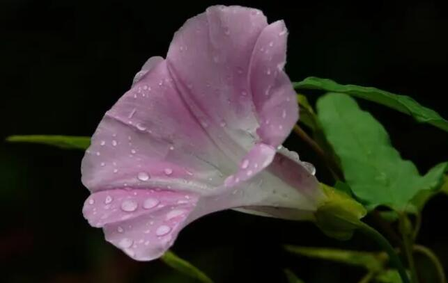

俗称“打碗花”，田间常见杂草，农村娃当玩具，殊不知是上佳野菜
农村的田地里，有很多各种各样的杂草，而到了夏季正是这些杂草疯长的季节。尤其是到了夏至节气以后，雨水多了，气温也高了，好多的杂草几天的时间就长一大片。所以农民朋友也常常顶着烈日去庄稼地里除草。
那大家可有见过一种很像牵牛花一样的杂草呢?这是在很多的庄稼地里都有的，尤其是玉米、高粱、大豆地里比较常见。农村的很多小伙伴在小时候估计也拿它当玩具，女孩子喜欢采摘它夹在耳朵上，还有些会用它做成花冠带头上。殊不知，这种杂草也是上佳野菜，在过去还是“救荒菜”，你们吃过吗?
让人害怕的“打碗花”
说起打碗花这个名字，相信很多人的回忆都拉伸到了童年时期。对于这种植物，很多人都是有点害怕的，它就像是农村各种野花中的“反派”角色一样。因为很多民间都有着“这种花不能碰，不然晚上吃饭会把碗打烂”的说法。
在当时，碗可是比较珍贵的，如果打烂了还是要找人把碗补上的。也是因为碗很珍贵，小孩子如果把碗打烂了，难免会被父母一顿责骂。因此很多的小孩子看到了打碗花，都会尽量的远离不敢靠近，生怕晚上吃饭把碗打烂了，然后惹父母不高兴而受到责骂。
但是也有些胆子大的小朋友，会采摘打碗花来玩耍，它长得十分像牵牛花，一个大大的小喇叭，非常的好看。
打碗花的小科普
打碗花在我国的分布很广，因此民间的叫法也有所不同，比如小旋花、燕覆子、兔耳草、富苗秧、兔儿苗、扶七秧子等等。它之所以和牵牛花长得如此相似，是因为它们都是旋花科的，只是打碗花是打碗花属的草本植物，也就是同科不同属的。
这种植物叶子有点像山药的叶子，叶片基部心形或者是戟形，植株不高，但是却是爬藤植物，细长又生长快，常常缠绕在其他的植物上生长。而花朵神似牵牛花，也是喇叭状的，但是颜色比较单一，花朵腋生，花梗长于叶柄。花期是在七月到九月之间，而果期则是八月到十月。
打碗花的危害
现在很多的农民提到打碗花，对其倒是有点咬牙切齿的感觉，恨不得把它斩草除根了，因为它是庄稼地里的一种常见杂草。
打碗花的生命力非常的顽强，喜欢在湿润、肥沃的生长环境，但是对土壤要求不严格，适应性很强，既能耐热，也能耐干旱。常常生长在路边、荒地、农田里。
打碗花还具有繁殖能力强，生长速度快的特点，对农田作物的危害极大，尤其是对于玉米、高粱减产影响很大。这是因为打碗花既能通过种子传播，又可以依靠根芽、茎芽来传播。在农田之中的主要是靠无性繁殖来横行霸道，而鸟类和其他的哺乳动物吃了它以后，就能起到传播的作用。
打碗花的植株虽然矮小，茎干也很细小，但是生长速度很快，它就像是一条细长的蛇一样，能不断的缠绕着玉米等作物的叶片，然后不断生长，从而导致玉米叶子不能伸展，很容易造成玉米的减产。那打碗花有价值吗?

打碗花的价值参考
打碗花的价值也有不少，在古代的时候它可是“救荒菜”，目前有些山区依然采摘它的嫩茎叶来食用。
打碗花当野菜吃，最早是出现在《救荒本草》中，这本书是明朝明成祖朱棣的弟弟朱橚亲自负责编写的一本图书。这个王爷不爱权贵，反而对于本草植物非常热衷。他看到了饥荒导致民不聊生，很多人都在采摘野草野菜吃。但是有些却是有毒的，于是他就亲自编写了《救荒本草》这本书，就是希望能关键时候帮助民众。在这本书中，对于打碗花是这样记载的：
“葍[fú]子花俗名打碗花，一名兔儿苗，一名狗儿秧，幽蓟间谓之燕葍根，千叶者呼为缠枝牡丹，亦名穰花……开花状似牵牛花，微短而圆，粉红色。其根甚多，大者如小筋粗，长一二尺，色白。味甘，性温。”
打碗花所食用的是它的嫩茎叶，经过沸水焯过之后，它是可以烹饪成多种美食的，既能清炒，也可以做汤，还可以蒸鸡蛋羹等。并且打碗花的营养价值还很高，它所含有的胡萝卜素要比白菜高出20倍。不过需要注意，打碗花是有小毒的，要食用一定要煮熟了才行。
另外打碗花的茎叶还可以用来喂猪、羊和兔子，是一种优质的饲料。就连它地下的块茎，也是可以当野菜食用的，含有丰富的淀粉，并且还能用来制作饴糖、酿酒等。
更值得一提的是，打碗花还是能入药的，它有着健脾益气、利水、调经、止带的作用。有些资料还显示，打碗花还对于疗糖尿病也有一定的辅助治疗效果。
结束语
儿时当玩具玩耍的打碗花，常被人误认成牵牛花，如今常被农民当成害草除掉。但是很多人不知道它却是一种上佳的野菜。听爷爷奶奶那一代的人说，在过去没什么食物可吃的时候，它们真的会去采挖打碗花的嫩叶来煮菜吃，偶尔吃吃还是很不错的。
各位朋友们，你们可有吃过打碗花?
 上一篇
上一篇